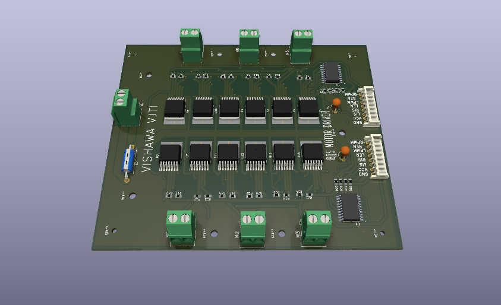
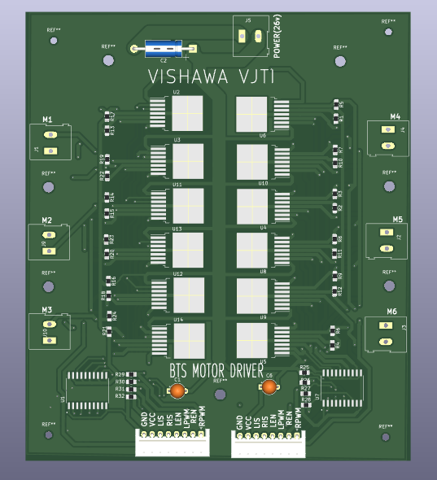
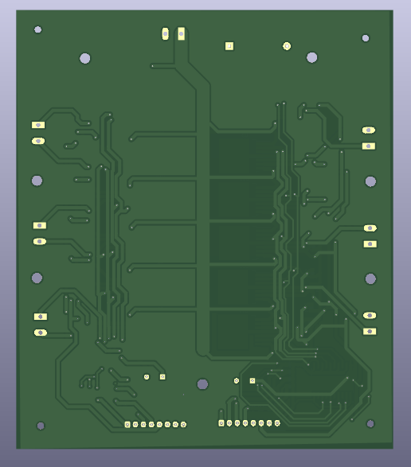
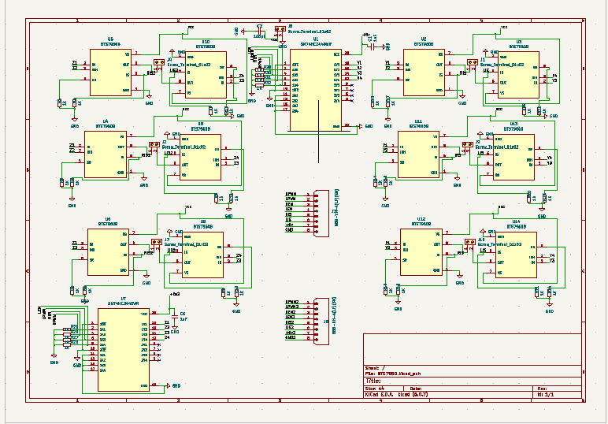

Overview
Hardware PCB desing for motor control using BTS7960 full brigde mosfet IC's.
The Desing
Hardware consist of 6-full H-bridge mosfet ic's and power distribution section.

Hardware PCB

Top-level PCB

Bottom-level PCB

schematics
What I Would Do Differently
For future development i would add MCU controller to the Hardware architecture with Firmaware controller algorithm implemented with PID and motor calbration. And a GUI/serial controller for externally user.